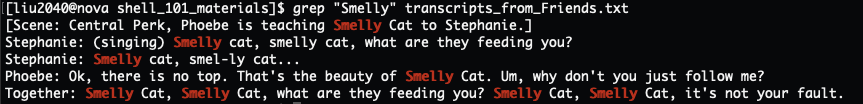
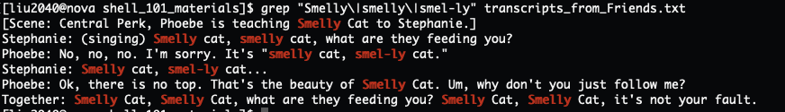
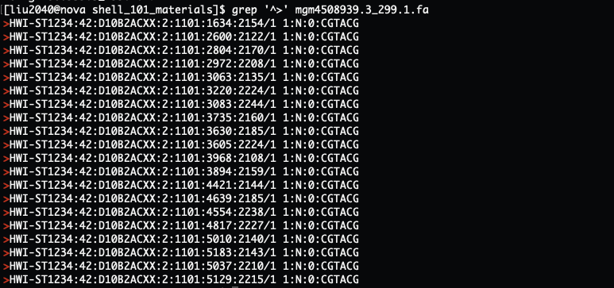

Basic command line programming
Author: Jia Liu
Date: 11/30/2023
2 Working with files
2.1 Creating a new directory
We can create a new directory using the
mkdir NEW_DIRECTORY. For example, we can create a directory
called test_dir by:
mkdir test_dirLet’s create a directory called
practice_working_with_files through:
mkdir practice_working_with_filesLet’s go to the new created directory through:
cd practice_working_with_filesLet’s check what directory we are currently in using
pwd.
2.2 Writing to, displaying, and counting files
- Writing to a file through
echoand>
echo is a command that echoes back or prints whatever we
supply to it. For example:
echo "Hello world"Output:
Hello worldAnother example:
echo "happy Friday!"Output:
happy Friday!The > character takes the output on the left hand
side command and saves it to the file on the right hand side. So, if we
wanted to save the phrase “First sentence” to file_1.txt,
we would type:
echo "First sentence" > file_1.txtNow if you list the contents in the current folder using
ls, you should see the file_1.txt we just
created.
- Displaying or printing out the contents of a file
We can display everything in a file using cat FILE_NAME.
Let’s print out the contents of the file_1.txt we just
created:
cat file_1.txtOutput:
First sentence- Append text to an existing file
Note: While using echo "TEXT" > FILE_NAME to write
text into a file, if the file you put on the right hand side already
exists, it will overwrite its contents with whatever you’re putting
there.
For example, if we write “New line” to the file_1.txt
that we just created:
echo "New line" > file_1.txtAnd print out the contents in this file:
cat file_1.txtOutput:
New lineThe file_1.txt is overwritten with the “New line”. What
if we want to append more texts to an existing file without removing the
previous contents? We can use echo "TEXT" with
>>. For example, append “The second line” to
file_1.txt:
echo "The second line" >> file_1.txtNow let’s display all the contents in file_1.txt:
cat file_1.txtOutput:
New line
The second lineLet’s add another line:
echo "The third line" >> file_1.txtNow let’s display all the contents in file_1.txt:
cat file_1.txtOutput:
New line
The second line
The third line- Counting a file
We can count a file using wc. For example:
wc file_1.txtThe first value is the number of lines in the file, the second is the number of words, and the third is the size of the file in memory.
If you only want to know the number of lines in a file, you can use
wc -l FILE_NAME:
wc -l file_1.txt2.3 Copying file and directory
2.3.1 Copying file
We can copy a file using cp. We first pass the name of
the file we want to copy, followed by the location of where we want to
copy it to. For instance, to copy the file_1.txt file to
our home directory, we can type:
cp file_1.txt ~Now let’s list all the contents in the home directory:
ls ~We can also rename the file at the time of copying by supplying a new
file name. For example, to copy file_1.txt inside the same
directory and rename it file_2.txt, we would type:
cp file_1.txt file_2.txtIf we print out the contents from both files, we can see they are the same:
cat file_1.txt file_2.txt2.3.2 Copying directory
Different from copying file, copying directory uses
cp -r instead of cp. Let’s copy the directory
for this workshop /work/adina/liu2040/shell_101_materials
to your home directory ~:
cp -r /work/adina/liu2040/shell_101_materials ~2.4 Removing file and directory
Let’s first navigate to your home directory and list all the contents in it:
cd ~then
ls2.4.1 Remove file
We can remove file using rm FILE_NAME. For example,
let’s remove the file_1.txt:
rm file_1.txtIf we list all the content now using ls, we can see
file_1.txt is gone.
2.4.2 Remove directory
We will use rm -rf DIRECTORY_NAME to remove the
directory. Let’s remove the test_dir:
rm -rf test_dir3
Searching files with GREP
Let’s first go to the shell_101_materials folder in our
home directory:
cd ~/shell_101_materials
ls3.1 Search for specific patterns in a file
We can see there is a file called
transcripts_from_Friends.txt. If we display the content in
this file we can see it’s part of the transcripts from the TV show
Friends, where Phoebe is teaching Stephanie her song Smelly
Cat:
cat transcripts_from_Friends.txtOutput:

What to do if I want to search all the words “Smelly” in this file?
grep "PATTERN" FILE_NAME is the function to go. We can
search all the appearances of Smelly in the file
transcripts_from_Friends.txt through:
grep "Smelly" transcripts_from_Friends.txtOutput:

grep found all the Smelly in this file.
Notice that most of the functions in Shell are case-sensitive, which
means our command above will only return Smelly as that
was what we searched; so even there are some smelly in
the file, grep will not return these patterns.
There are also some “smel-ly” in the file. What if we want to capture
multiple patterns in a file, say all the Smelly,
smelly, and smel-ly in this file?
grep can search more than one pattern in a file, where the
patterns need to be separated by \|, so the command will
look like this: grep "PATTERN_1\|PATTERN_2" FILE_NAME. For
example, we can find the appearances of “Smelly”, “smelly” and “smel-ly”
in the file transcripts_from_Friends.txt by:
grep "Smelly\|smelly\|smel-ly" transcripts_from_Friends.txt Output:

3.2 Search the patterns that locate at the beginning of the lines
grep allows you to search the patterns more
specifically. For example, only find those patterns that locate at the
beginning of the lines by “^PATTERN”, the “^” symbol defines at the
beginning of a line. In the case of the
transcripts_from_Friends.txt, we can find all the
transcripts from Phoebe (where Phoebe’s name will be at the beginning of
the lines) through:
grep "^Phoebe" transcripts_from_Friends.txt
3.2.1 Exercise
Useful information:
If you ls the content in the current directory, you can
see 8 sample metagenome files in addition to the
transcripts_from_Friends.txt. You can view the first 10
lines of a file using the head FILE_NAME. Let’s have a look
at the first few lines of mgm4667216.3_299.1.fa:
head mgm4667216.3_299.1.faOutput:

Above is how a DNA file typically look like. There will be lines that starts with a “>” symbol, which are the gene ID lines that tell you the name and sometimes more descriptions about the genes. The gene ID line will then followed by the nucleotide sequence of the corresponding gene. The sequence often only takes one line as shown above, but it may sometimes take multiple lines as shown in the below:

So normally, when we want to count how many genes are there in a DNA
file, we will count the number of gene ID lines, the ones that start
with >, in that file.
Question: how many genes are there in the file
mgm4508939.3_299.1.fa?
Hint:
Search all the lines in
mgm4508939.3_299.1.fathat starts with the pattern>, and save the returned gene ID lines into a file with the name of your choiceCount the number of lines of the file from the last step
3.2.2 Solution
3.2.2.1 Key 1
grep '^>' mgm4508939.3_299.1.fa > mgm4508939.3_299.1_geneIDs.txtwc -l mgm4508939.3_299.1_geneIDs.txt3.2.2.2 Key 2
Notice that our goal for this problem is to get the total number of
genes within the file mgm4508939.3_299.1.fa. Key 1 did the
job, but created an extra file
mgm4508939.3_299.1_geneIDs.txt that we may never use in the
future. grep '^>' mgm4508939.3_299.1.fa returns all the
gene ID lines that start with > in the file, is there a
way that we can directly pass the returned lines to the next function
wc -l for counting, without saving them to a file
first?

Yes, there is! You can use | to pass the output from the
command on its left, to the command on its right. So in this case, we
can pass the output of grep '^>' mgm4508939.3_299.1.fa
to the wc -l command through:
grep '^>' mgm4508939.3_299.1.fa | wc -lOutput:
20